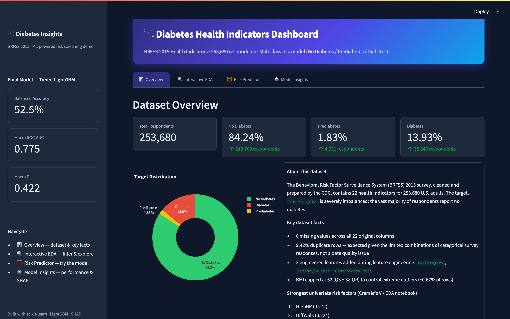
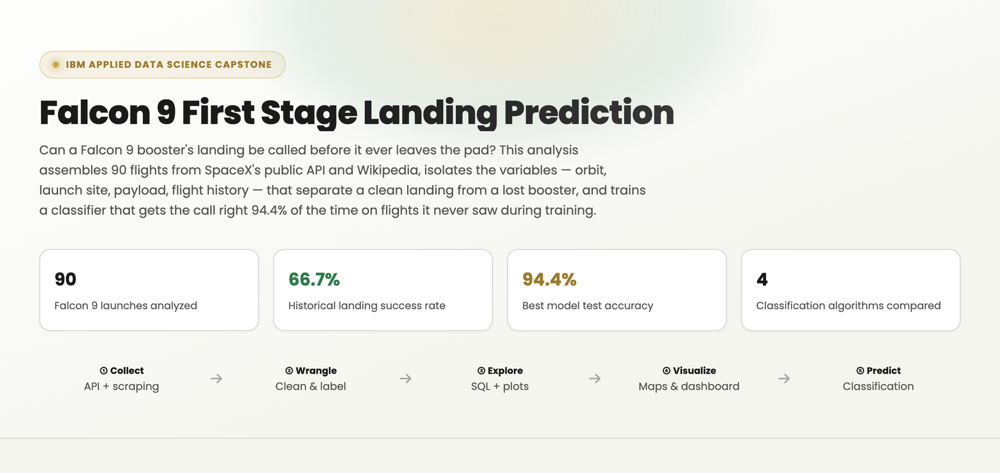

Every Project,

Built an end-to-end machine learning pipeline to predict diabetes risk from 253,680 CDC BRFSS health survey responses. Rigorous statistical testing — chi-square and Cramér's V for categorical features, Kruskal-Wallis and epsilon-squared for continuous ones — across 22 health indicators identified high blood pressure, difficulty walking, general health, high cholesterol, and heart disease history as the leading risk factors, despite a severe class imbalance (84.2% No Diabetes, 1.8% Prediabetes, 13.9% Diabetes). After engineering a WHO BMI category, a lifestyle score, and a comorbidity score, five classifiers — Logistic Regression, Random Forest, HistGradientBoosting, XGBoost, and LightGBM — were benchmarked on a stratified 70–15–15 split with class-weighted training and hyperparameter tuning via RandomizedSearchCV. The final LightGBM model achieved a Macro ROC-AUC of 0.775 and was explained with SHAP, surfacing general health, comorbidity score, and age as the top global risk drivers. The model is deployed as a live, interactive Streamlit dashboard with an overview, a filterable EDA explorer, a real-time risk predictor, and a model insights view.

Built an end-to-end pipeline to predict whether a SpaceX Falcon 9 booster's first stage would land successfully, using 90 launches sourced independently from SpaceX's public REST API and a Wikipedia table scraped with BeautifulSoup, then reconciled against each other before modeling. Landing labels were engineered from raw outcome strings while treating missing landing-pad data as informative — rather than erroneous — and explored through direct SQL queries against a Db2 table, matplotlib/seaborn analysis of flight number, payload mass, launch site and orbit, and an interactive Folium map and Plotly Dash dashboard profiling each launch site's geography and success rate. Four classifiers — Logistic Regression, SVM, Decision Tree, and KNN — were tuned via GridSearchCV with 10-fold cross-validation on an 80/20 split; the tuned Decision Tree was the strongest performer at 94.4% held-out test accuracy, correctly calling all 12 successful landings and 5 of 6 failures, framed throughout as the basis for estimating SpaceX's per-launch cost advantage from booster reuse.

Built a production-grade clinical analytics framework applied to 54,966 synthetic patient records across a six-phase pipeline. The process began with rigorous data provenance work — detecting and correcting 534 duplicate records and 108 erroneous billing entries, and engineering Length of Stay as a time-to-event variable — followed by multi-dimensional exploratory analysis across demographics, clinical patterns, financials, and operational performance using interactive Plotly visualisations. Biostatistical inference — chi-square tests of independence, Kruskal-Wallis ANOVA, and odds ratios with 95% confidence intervals — was used to interrogate clinical associations, while Kaplan-Meier survival functions and a multivariate Cox Proportional Hazards model (concordance = 0.506) characterised time-to-discharge. Logistic Regression, XGBoost, and Random Forest classifiers were trained and compared for tri-class test result prediction, with the best model (Random Forest, Macro F1 = 0.43, ROC-AUC = 0.629) explained via SHAP, before the pipeline concludes with K-Means clustering and UMAP dimensionality reduction for unsupervised patient segmentation.

Applied a two-phase supervised learning framework to predict disease progression in Idiopathic Pulmonary Fibrosis (IPF) using clinical and high-dimensional proteomic data from 60 patients monitored over 80 weeks, of whom 58% progressed. In a low-dimensional setting using 14 curated covariates — including six proteomic biomarkers linked to IPF progression — Decision Tree, Random Forest, and Logistic Regression classifiers were trained on a stratified 70/30 split with 10-fold cross-validation, tuned via out-of-bag error and GVIF diagnostics; Random Forest performed best, reaching 83.3% accuracy, 100% sensitivity, and an AUC of 0.984. In a high-dimensional setting using the full 1,129-covariate proteomic profile, LASSO logistic regression and Random Forest were compared through regularisation and ensemble tuning; Random Forest again outperformed (61.1% accuracy, F1 = 0.842, AUC = 0.569), though both models' limited generalisation highlighted the trade-off between model flexibility and statistical power when predictors vastly outnumber observations.

Analysed survival outcomes for 349 patients in the PBC3 multi-centre randomised trial to assess whether Cyclosporin A (CyA) reduces the risk of treatment failure — death or liver transplant — in Primary Biliary Cirrhosis, with all modelling carried out in SAS. Kaplan-Meier estimation found no significant survival difference between CyA and placebo (p = 0.78), but revealed disease stage, sex, and gastrointestinal bleeding history as strong univariate prognostic factors (p < 0.0001, p = 0.006, and p < 0.05 respectively). A multivariate Cox Proportional Hazards model (global p < 0.0001) identified sex, bilirubin, albumin, and disease stage as significant predictors of survival, while a Weibull Accelerated Failure Time model corroborated these findings and additionally flagged aspartate transaminase and treatment as significant accelerants of time-to-failure; residual diagnostics confirmed both models' assumptions were well met, aside from a proportional-hazards violation for stage 1.

Conducted an end-to-end exploratory and predictive analysis of the Wisconsin Diagnostic Breast Cancer dataset, which characterises 569 Fine Needle Aspiration (FNA) samples using 30 features derived from the mean, standard error, and worst-case values of 10 cell-nucleus measurements (radius, texture, concavity, symmetry, and more). Following EDA and multivariate analysis of feature correlations and class separability, five classifiers — Logistic Regression, K-Nearest Neighbors, Random Forest, Support Vector Machine with an RBF kernel, and Gradient Boosting — were trained and evaluated on a held-out test split. The SVM with RBF kernel achieved the highest accuracy at 98.25%, followed by Logistic Regression (97.37%), Random Forest and KNN (96.49% each), and Gradient Boosting (95.61%) — demonstrating the strong diagnostic potential of machine learning for distinguishing malignant from benign tumours from FNA imaging features.

Built an interactive R Shiny application, developed with the tidyverse, ggplot2, and Plotly under a reactive Shiny architecture, for exploring PM2.5 air-quality trends across major cities in the United States and India, combining data wrangling, summary statistics, and dynamic visualisation into a single, responsive analytical tool. Users can filter interactively by country, city, pollutant source category, and custom date range to generate on-the-fly summary statistics — including mean, median, and standard deviation — alongside time-series plots, with contextual annotations marking significant events that drove notable pollution spikes or drops. The app is designed to support data-driven environmental assessment and public health decision-making, letting policymakers and researchers run granular, side-by-side comparative air-quality analysis across regions and time periods without writing a single line of code.

Implemented logistic regression from first principles via Iteratively Reweighted Least Squares (IRLS), derived from the Newton-Raphson optimisation algorithm, to model Titanic survival as a function of sex, age, class, and fare from the Kaggle Titanic dataset, reaching 80.0% classification accuracy after convergence in just 6 iterations. The fitted coefficients confirmed that being female (β = 2.61) and travelling in a higher class (β = -1.15 for lower class) were the strongest predictors of survival, while age and fare had smaller effects. Monte Carlo simulation of 10,000 synthetic passengers estimated a baseline survival probability of 44.9%, rising only marginally to 45.3% under a hypothetical 95% lifeboat-capacity scenario; applying variance-reduction techniques — stratified sampling, antithetic variates, and control variates — refined this estimate to as high as 50.1%, with antithetic variates proving most effective at reducing simulation variance.

Modeled the spatial distribution of Female Sex Workers (FSWs) across five sub-Saharan African countries — Mozambique, Malawi, Zimbabwe, Zambia, and Botswana — using 675 survey transects, combining environmental covariates (population density, urbanisation, temperature, rainfall, night-time light) with sociological factors (HIV prevalence, crime, and insect-net use). After diagnosing overdispersion in an initial Poisson model, a negative binomial mixed-effects model with random intercepts for country, region, year, and month, and an offset for survey area, provided the best fit (AIC = 2863.2). The final model identified population density, urbanisation, temperature, high local crime, and insect-net usage as significant predictors of FSW counts, with substantial unexplained variability attributable to country- and region-level random effects — insights intended to guide the geographic targeting of HIV-prevention interventions.

Built a Bayesian linear regression model with a custom Gibbs sampler (5,000 iterations, 1,000 burn-in) to estimate the effects of age, sex, BMI, number of children, smoking status, and region on medical insurance charges for 1,338 policyholders, using conjugate normal-inverse-gamma priors for closed-form posterior updates. Posterior estimates identified smoking status as the dominant driver of cost (posterior mean β = 0.795, P(β > 0) = 1.000), followed by age (β = 0.298) and BMI (β = 0.171), with smaller but credible effects for number of children and the southeast/southwest regions. A parallel frequentist OLS model produced consistent point estimates and significance patterns (e.g., smoking added $23,849 to charges, p < 0.0001), and MCMC trace and density diagnostics confirmed good mixing and convergence — illustrating how Bayesian credible intervals and inclusion probabilities can complement traditional p-values for healthcare cost modelling.

Developed a binary classifier to predict whether a maize gene is expressed specifically in pollen using only genomic sequence-derived features — bypassing the cost of transcriptomic or proteomic profiling — across 12,725 genes and 2,626 candidate features sourced from MaizeGDB, with pollen-specificity playing a key role in crop fertility and yield. After filtering low-variance and highly correlated features, PCA and t-SNE revealed limited natural separation between pollen-specific and non-specific genes, motivating a supervised approach: a LASSO-regularised logistic regression retained 336 informative sequence features. The final model achieved an AUROC of 0.744 on held-out data — meaningfully better than chance, with high specificity but lower sensitivity — and feature-weight analysis flagged enriched sequence motifs, including the 3-mer ATC, as candidate cis-regulatory elements worth exploring in future pollen-specificity research.

Analysed spatial patterns in building-damage severity across a stratified sample of 10,000 California wildfires (drawn from a database of over 100,000), mapping damage levels from "No Damage" to "Destroyed" by location and county. Global and local spatial autocorrelation tests (Moran's I = 0.603, Geary's C = 0.395, both p < 0.0001) confirmed strong, statistically significant clustering of similar damage levels across the state. Spatial autoregressive (SAR) and conditional autoregressive (CAR) models, fitted on a ~2,000-fire subsample with a 4-nearest-neighbour weights matrix, produced consistent estimates (mean damage level ≈ 2.5) largely insensitive to the neighbourhood cutoff distance, while a fitted spherical variogram (range ≈ 22km) corroborated that wildfire damage correlation decays sharply with distance — reinforcing that local, rather than regional, factors dominate damage severity.
Re-examined the Pew Research Center's 2022 cross-national survey on global threats — which found climate change ranked as the top concern across 19 advanced economies — to investigate the statistical relationship between sample size and margin of error. Focusing on the U.S. American Trends Panel (3,581 of 4,120 sampled respondents, an 87% response rate, ±2.3-point margin of error), the analysis derived the implied population variance from the published margin of error and used it to project sample-size requirements for tighter precision. The results showed that shrinking the margin of error to 0.2% would require expanding the sample to roughly 25,000 respondents — a substantial cost increase — and the discussion highlights sampling, non-response, and incentive-related biases as key limitations of the original survey design, alongside recommendations for more transparent methodology in future iterations.